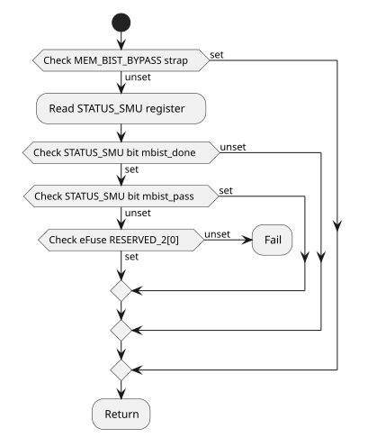
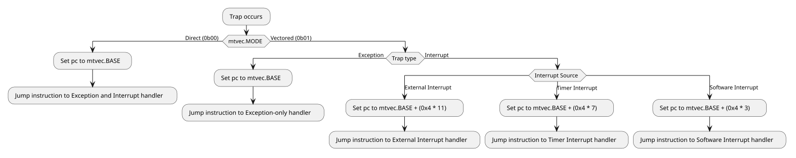
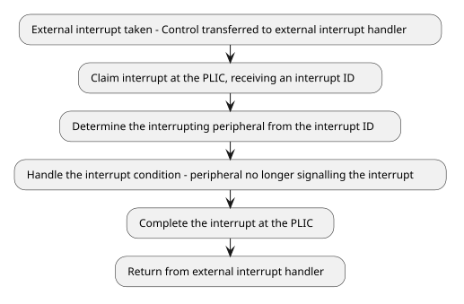
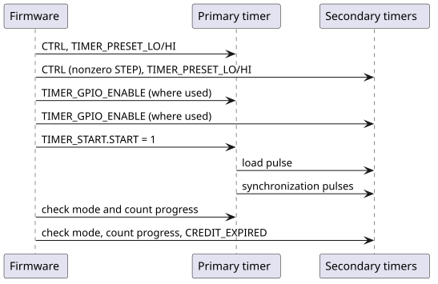

1. SMC Programming Guide
This Chapter details the bring-up process and run-time operation of the SMC for the purposes of firmware development, with references to the Production SMC ROM.
The Appendix contains a detailed reference to the Production SMC ROM, along with documentation on configurable functionality, such as compile-time options and hookable functions.
1.1. SMC Bring-up
1.1.1. Address Map
The SMC accesses its resources and peripherals through its fixed local-alias
aperture, at the RTL-fixed base address LOCAL_BASE (0xC000_0000), and with
programmable size REGION_SIZE, which defaults to 16 MiB.
External masters can access the SMC’s resources through the SMC’s global system
address, which is assigned by the integrator. This must be matched by firmware
in the GLOBAL_BASE register. The global aperture is also of size
REGION_SIZE.
The integrator’s assignment of global system addresses to SMCs should be a function of each chiplet’s Chiplet ID, which can be read from the eFuse block. It is the integrator’s responsibility to assign subsystems to global address ranges that do not overlap with each other, or with the SMC’s local-alias aperture.
Addresses throughout this chapter are expressed as BASE + offset, where
BASE is either the local-alias base address LOCAL_BASE, or the global
system base GLOBAL_BASE. offset is bounded by REGION_SIZE. The
GLOBAL_BASE and REGION_SIZE registers are part of the CPU Control block.
See the Memory Map chapter of the Technical Reference Manual for the full generated component address map.
The ext_out port is a catch-all for outbound memory requests from the SEP and
SMC that do not match any programmed aperture. Unmatched inbound memory requests
from external masters on ext_in are not passed-through to ext_out — only
the SMC window exposed by GLOBAL_BASE and REGION_SIZE is accessible
externally, otherwise a decode error is returned. Firmware must program
GLOBAL_BASE and REGION_SIZE before any cross-subsystem AXI traffic is
issued.
Never program REGION_SIZE to zero. The same register sizes the SMC input
fabric’s local/global split, SMU-level routing and the SEP-to-SMC decode, so
zero collapses both windows and routes SMC CPU accesses to its own resources
out through the output fabric. After reconfiguring the global aperture, derive
global addresses for accesses that leave the local SMC view from the
GLOBAL_BASE value.
1.1.2. SMC CPU
The SMC CPU consists of 4 Rocket RV64 cores. The cores implement the RV64GC instruction set, as well as the Zba, Zbb, and Zbs instructions. The cores support Machine, Supervisor, and User mode privilege levels.
The CPU cold-reset vector is 0xC004_0000, corresponding to the start of ROM
memory — see the SMC’s address map above. Each core’s reset vector can be
modified to a warm-reset (a reset that does not clear SRAM) vector by writing
the location to the core’s RESET_VECTOR register, which is part of the CPU
Control block.
During early bring-up, it is advised to allow only one core to perform some
early initialization procedures. Each core’s ID can be read from the mhartid
CSR. The programmer should only allow the core with mhartid set to 0 to
perform early initialization of memory (for example, copying runtime data from
ROM to SRAM), while the rest of the cores wait to be released from a loop.
In the 1-core configuration, the single core has mhartid set to 0.
In the production SMC ROM, the __metal_synchronize_harts function is used by
the primary core to signal initialization is complete, and for the secondary
cores to wait until they are released.
By default, the production SMC ROM parks the remaining secondary cores in a
wfi loop. The programmer may redefine the secondary_main function in C code
to provide code for the secondary cores.
The core ID read from the mhartid register must also be used to give each
core a unique stack region for C code.
The production SMC ROM linker script — hw/sys/smc/bootrom/prod/linker/smc/smc_rom.ld — matches the 128 KiB ROM
region. It places .init, .fini, the constructor arrays, .rodata, .text
and ROM padding in ROM. .data, .tdata, .itim and .lim are included in
the ROM image, but have runtime addresses within SRAM at 0xC006_0000. This
data must be copied into SRAM (by the single initializing core) before it can be
referenced or modified. .tbss, .bss, the stack and the heap reside only in
SRAM.
1.1.3. SRAM Initialization using Memory Zeroer
The SMC contains a Memory Zeroer unit at BASE + 0x0003_8200, which can be used
to initialize SRAM before use. This can be performed like so:
-
Disable interrupts to the core.
-
Write the SRAM base address (
0xC006_0000) to the Memory Zeroer’sDEST_ADDRregister. -
Write the size of SRAM (128 KiB =
0x0002_0000) to the Memory Zeroer’sSIZEregister. -
Write zero to the Memory Zeroer’s
CTRL_STATUSregister, which starts the operation. -
Poll the Memory Zeroer’s
CTRL_STATUSregister until theSTATUSbit (bit 32) is unset, indicating the operation is complete. -
Restore interrupt state.
See also __metal_sram_init_early in
hw/sys/smc/bootrom/prod/boot/sram_init.S, described in [smc-boot-rom].
The production ROM assumes that SRAM is automatically zeroed on reset. If
either SRAM_AUTO_ZERO_DISABLE or the eFuse RESERVED_0[6] is set, the
Memory Zeroer is used by the production ROM.
The same sequence clears any other region the zeroer can reach. Before
starting, validate the destination address, the length, the access permissions
of the target and the address arithmetic: the zeroer performs no such checks.
Set CTRL_STATUS.INT_EN in the start write to receive a completion pulse
instead of polling. Completion means that every write response has arrived,
not that every write succeeded, because the zeroer does not check BRESP.
Where the clearing must be verified, read the region back or use another
independent verification path.
1.1.4. Memory Built-In Self Test and Repair
The programmer may check the status of the SRAM memory built-in self-test
(MBIST) and SRAM Memory Repair before usage by reading the STATUS_SMU register.
In the Production SMC ROM, this is performed by the `metal_mbist_early_check`
and metal_memory_repair_check respectively. It is recommended to use these
implementations as reference, as these functions are implemented directly in
assembly, without using any SRAM for storage, as that is what is being tested.
Their operation is as follows:
__metal_mbist_early_check performs the following steps:
-
Check the
MEM_BIST_BYPASSstrap (registerSTRAPS_HIbit 54). If set, skip MBIST check, otherwise continue. -
Read the DFT Control’s
STATUS_SMUregister. -
Check if the MBIST was performed (register
STATUS_SMUbit 4). If unset, assume the MBIST was not required, and return. -
Check if the MBIST passed (register
STATUS_SMUbit 8). If set, return — the MBIST has passed. -
The MBIST has failed, or aborted due to a timeout. If the eFuse
RESERVED_2[0]is set, ignore the failure and return. -
The MBIST has failed — park the core in a
wfiloop.

__metal_mbist_early_check.__metal_memory_repair_check performs the following steps:
-
Check the
MEM_REPAIR_BYPASSstrap (registerSTRAPS_LObit 13). If set, skip memory repair check, otherwise continue. -
Read the DFT Control’s
STATUS_SMUregister. -
Check if memory repair was performed (register
STATUS_SMUbit 0). If unset, assume memory repair was not required, and return. -
Check if memory repair passed (register
STATUS_SMUbit 1). If set, return — memory repair has passed. -
Memory repair has failed. If the eFuse
RESERVED_2[0]is set, ignore the failure and return. -
Memory repair has failed — park the core in a
wfiloop.

__metal_memory_repair_check.1.1.5. Per-Core Reset
See the SMC CPU reset description in the Technical Reference Manual for the hardware behavior, the drain handshake and the associated risks.
|
Do not reset a hart while any hart is performing coherent memory accesses. |
A software reset through CPU_CTRL.RESET_CTRL is withheld until the CPU AXI
isolation boundary drains. Holding any core in reset terminates the other
cores' MMIO accesses with SLVERR and stalls L2 frontend traffic until every
core is released. To request one:
-
Program
CPU_CTRL.RESET_TIMEOUT.timeout_valuebounds, in SMC clock cycles, how long the request may wait for the drain; zero waits indefinitely.timeout_modechooses the expiry behavior:0reports the timeout and keeps withholding the reset,1forces the reset and flushes the isolation blocks. -
Write the core or uncore reset bit, or the core reset pulse bit, in
RESET_CTRL. -
Poll
RESET_TIMEOUT.reset_applied, which rises once the reset is applied by a completed drain or a forced timeout.RESET_TIMEOUT.reset_timeoutreports an expired wait in either mode and stays high until the request is removed. -
Release the reset bit, or let the pulse complete, so the boundary reconnects.
Use force mode only for recovery from an unresponsive cluster. The flush clears only the CPU isolation blocks: a block elsewhere in the fabric that holds a response can leave its route or AXI ID blocked, and must be recovered separately or by cold reset.
A safe startup scenario, subject to the warning above, is when three of four
harts remain parked after ROM boot and must start at a different firmware
address. Before they join normal coherent operation, software can program a
parked hart’s RESET_VECTOR[n] and pulse its reset to start it at that address.
Avoid this flow where possible for the reasons described in the Technical
Reference Manual.
1.1.6. External CPU Cluster NDM Reset
Read NDMRESET_REQUEST bit i as the NDM reset request from external
CPU cluster i. Write NDMRESET_PROCESS bit i to answer that
cluster. Read NDMRESET_CLUSTER_COUNT and mask both registers with
that value.
This harness reports 4 in NDMRESET_CLUSTER_COUNT. Bits of
NDMRESET_REQUEST at and above the count read as 0. Writes to those
bits of NDMRESET_PROCESS stay in the register.
The register block is Chip Config, Scratch, NDM Reset, and Misc Wrap in the Technical Reference Manual.
1.2. General Operation
1.2.1. Interrupt Control
There are 3 architectural interrupt sources that the cores of the SMU receive:
-
Timer interrupts — Interrupts generated by the system timer. In the SMC, the source of timer interrupts is the core local interruptor (CLINT).
-
Software interrupts — Interrupts signalled by other cores in the system. In the SMC, software-initiated interrupts are signalled through the CLINT.
-
External interrupts — Interrupts from all other peripherals. External interrupts are aggregated by the platform local interrupt controller (PLIC).
External interrupts have the highest priority, followed by Software interrupts, then Timer interrupts.
The mtvec CSR stores the trap vector which the cores transfer control to upon
taking an interrupt or encountering an exception. The mtvec CSR contains the
base address BASE of the trap vector, as well as a MODE field that
determines how the trap vector address is computed:
-
If
MODEis set to Direct (0b00), then all interrupts and exceptions cause the program counter to be set tomtvec.BASE. -
If
MODEis set to Vectored (0b01), then exceptions cause the program counter to be set tomtvec.BASE, and interrupts cause the program counter to be set tomtvec.BASE + (0x4 * i), whereiis the architectural interrupt type (Timer, Software, or External, per-privilege level).
Since program counter destinations in Vectored mode form a tightly-packed array, the entries for each interrupt should consist of a single jump instruction to a programmer-defined exception/interrupt handler function.

Timer and Software Interrupt Control
The SMC uses the core local interruptor (CLINT) for Timer interrupts,
as well as for software-initiated inter-processor interrupts (IPIs).
The base address for the CLINT — CLINT_BASE — is 0xC800_0000.
The current value of the timer is stored in the CLINT’s MTIME register, at
CLINT_BASE + 0xBFF8. The CLINT stores a timer comparison value corresponding
to each core of the SMC in the CLINT MTIMECMP register array, at
CLINT_BASE + 0x4000 + (0x8 * hartid). Both registers are 64-bits wide.
A timer interrupt becomes pending for a core once MTIME exceeds the core’s
corresponding MTIMECMP value. To dismiss the interrupt, the timer interrupt
handler should set the core’s corresponding MTIMECMP register to a new value
in the future.
|
There may be a delay between writing |
The following code samples should be used to read the full 64-bit MTIME value
using 32-bit reads, guarding against overflow between the two halves, and
setting the value of MTIMECMP without causing a spurious interrupt:
// CLINT addresses.
// In SMC-local address space.
#define CLINT_BASE 0xC8000000
#define CLINT_REG_MSIP(hartid) (CLINT_BASE + ((hartid) * 0x4))
#define CLINT_REG_MTIMECMP_LO(hartid) (CLINT_BASE + 0x4000 + ((hartid) * 0x8))
#define CLINT_REG_MTIMECMP_HI(hartid) (CLINT_BASE + 0x4004 + ((hartid) * 0x8))
#define CLINT_REG_MTIME_LO (CLINT_BASE + 0xBFF8)
#define CLINT_REG_MTIME_HI (CLINT_BASE + 0xBFFC)MTIME example C usage.uint64_t read_clint_mtime(void) {
uint32_t hi, lo;
// Make sure the high half has not overflowed
// while reading the lower half.
do {
hi = read32(CLINT_REG_MTIME_HI);
lo = read32(CLINT_REG_MTIME_LO);
} while (read32(CLINT_REG_MTIME_HI) != hi);
return ((uint64_t)hi << 32) | lo;
}MTIMECMP example C usage.unsigned long read_hartid(void) {
// Determine the current hartid by
// reading from the `mhartid` CSR.
unsigned long hartid;
__asm__ volatile(
"csrr %[hartid], mhartid"
: [hartid] "=r"(hartid)
:: "memory"
);
return hartid;
}
void write_clint_mtimecmp(uint64_t value) {
unsigned long hartid = read_hartid();
write32(CLINT_REG_MTIMECMP_HI(hartid), 0xFFFFFFFF);
write32(CLINT_REG_MTIMECMP_LO(hartid), (uint32_t)value);
write32(CLINT_REG_MTIMECMP_HI(hartid), (uint32_t)(value >> 32));
}Cores can send interrupts to other cores of the SMC by writing a value of 1
to the target core’s corresponding MSIP register, at
CLINT_BASE + (0x4 * hartid). This writes directly to the target core’s
MIE.msip bit.
Upon taking a software interrupt, a core may clear its software interrupt
pending bit by writing 0 to its corresponding MSIP register.
Neither timer nor software interrupts use a PLIC completion write.
void software_interrupt_send(unsigned long target_hartid) {
write32(CLINT_REG_MSIP(target_hartid), 1);
}
void software_interrupt_clear(unsigned long target_hartid) {
write32(CLINT_REG_MSIP(target_hartid), 0);
}External Interrupt Control
The SMC uses the standard RISC-V platform-level interrupt controller (PLIC) for managing external interrupts, see here for the RISC-V PLIC Specification and layout.
See the SMC CPU Interrupt Vector Map chapter of the Technical Reference Manual for the full generated interrupt map.
The allocation of additional interrupt IDs within the External interrupts block is defined by the integrator.
Before enabling delivery, initialize the PLIC priority, enable and threshold
registers, which are not reset by hardware, and the CPU mie CSR, then set the
individual enables and mstatus.MIE. Enable each source in the intended machine
or supervisor context with a priority above that context’s threshold. A source’s
priority is shared by every context that enables it, so changing it affects all
of them. Source ownership and core assignment are firmware decisions; the
hardware imposes no fixed roles.
The process of determining and servicing the specific external interrupt is as
follows, where PLIC_BASE = 0xC400_0000:
-
Claim the highest priority pending interrupt ID by reading from the PLIC
CLAIMregister for the hart atPLIC_BASE + 0x20_0004 + (0x1000 * hartid). -
If the returned interrupt ID is 0, return from the interrupt handler — any pending interrupts have been claimed by other cores on the system.
-
Dispatch to the corresponding interrupt handling routine, based on the claimed interrupt ID.
-
Complete the interrupt at the peripheral, clearing its interrupt pending signal to the PLIC.
-
Finally, complete the external interrupt at the PLIC, by writing the claimed interrupt ID to the PLIC
COMPLETEregister for the hart, also atPLIC_BASE + 0x20_0004 + (0x1000 * hartid).
|
If the interrupt is cleared at the PLIC before it is cleared at the interrupting peripheral, the interrupt may be raised again to the PLIC, causing a future spurious interrupt. Clearing of interrupt signals should be done from the inner-most source first (peripheral first, then PLIC), akin to popping the stack that narrowed in on the interrupt condition. |
Several PLIC sources are OR-combinations: the GPIO halves, each UART with its
Log Engine, and the AXI hang detectors. For these, inspect every contributing
local status that can keep the line asserted before completing. Claim and
complete do not clear a peripheral’s own sticky status, and they do not make
short or repeated pulses lossless: DMA and zeroer completions are pulses, not
counted queues, so track DMA retirement with DONE_0 rather than by counting
completion interrupts.

Bus Error Units
Each core has a Bus Error Unit (BEU) that accumulates its bus error events.
ACCRUED_ENABLE is sticky status, not an enable mask: events set its bits
regardless of ENABLE, an ordinary write replaces them, and writing zero
clears them. ENABLE gates capture of the first error’s CAUSE and
PHYS_ADDR while CAUSE is zero. LOCAL_ENABLE delivers accrued errors
directly to the core, bypassing the PLIC, and PLIC_ENABLE selects the PLIC
output; in machine mode, mstatus.MIE = 0 still suppresses the local delivery.
To service a BEU, capture CAUSE, PHYS_ADDR and ACCRUED_ENABLE first, then
clear ACCRUED_ENABLE and rearm capture by writing CAUSE to zero. Both
delivery paths select from the same accrued bits, so clearing them affects both.
1.2.2. Watchdog Timers
Each core of the SMC has a dedicated watchdog timer (WDT), that can generate
an interrupt and optionally a reset of the core if not serviced within a
configurable period of time. The watchdog timers are driven by the SMU clock
signal clk_smu_i.
The COUNT register contains the raw WDT timer value, and increments at the
frequency of the SMU clock signal clk_smu_i. The wdogscale field in the
CTRL register contains a right-shift amount which is applied to the COUNT
register, effectively dividing the WDT tick rate by 2CTRL.wdogscale.
The scaled counter after shifting can be read from the SCALED_COUNT register.
The SCALED_COUNT register is compared to the CMP register to determine if
the WDT has expired. If SCALED_COUNT >= CMP, a watchdog timer interrupt is
raised.
Every register write (with the exception of KEY) requires unlocking by writing
the value 0x51F15E to the KEY register. The WDT automatically locks after
one register write after unlocking.
The wdogenalways (bit 12) and wdogcoreawake (bit 13) fields of CTRL
control under what conditions COUNT is incremented. If wdogcoreawake is set,
COUNT is only incremented while the core is not in reset. If wdogenalways
is set, COUNT always increments. wdogenalways takes priority over
wdogcoreawake if both bits are set.
If wdogzerocmp (bit 9) is enabled in CTRL, the watchdog timer COUNT will
reset to 0 once the comparison threshold CMP has been reached and an
interrupt has been fired. Otherwise, COUNT will continue incrementing and
must be manually written to to set it to a lower value (after unlocking a
register write by writing to KEY).
If wdogrsten (bit 8) is enabled in CTRL and the WDT fires, the core being
reset will not be able to service its own WDT interrupt. Other SMC cores
should enable interrupts from each other’s watchdog timers to be notified when
a core is reset by the watchdog, so that SMC software can robustly recover from
the failure or reallocate work while the reset core is brought up again.
In the event of a watchdog timer interrupt, software — running on a core other
than the one reset by wdogrsten being set — should clear the interrupt at the
watchdog by:
-
Bringing the scaled count below
CMP, by feeding the watchdog or by writingCOUNT. Hardware setsCTRL.wdogip0on every cycle the scaled count is at or aboveCMP, so the bit cannot be cleared while that holds. This may not be necessary ifCTRL.wdogzerocmpis also set and not enough time has passed for the interrupt to be reasserted. -
Writing
KEYagain. Feeding or writingCOUNTconsumes the unlock, and feeding leaveswdogip0set. -
Writing
CTRLwithwdogip0(bit 28) at zero and its other fields unchanged.
// WDT register addresses.
// In SMC-local address space.
#define WDT_BASE 0xC0000000
#define WDT_REG_CTRL(hartid) (WDT_BASE + ((hartid) * 0x400) + 0x0)
#define WDT_REG_COUNT(hartid) (WDT_BASE + ((hartid) * 0x400) + 0x8)
#define WDT_REG_FEED(hartid) (WDT_BASE + ((hartid) * 0x400) + 0x18)
#define WDT_REG_KEY(hartid) (WDT_BASE + ((hartid) * 0x400) + 0x1C)
#define WDT_REG_CMP(hartid) (WDT_BASE + ((hartid) * 0x400) + 0x20)
// WDT register constants.
#define WDT_KEY_UNLOCK 0x0051F15E
#define WDT_FEED_VALUE 0x0D09F00D
#define WDT_CTRL_WDOGRSTEN 0x100
#define WDT_CTRL_WDOGENALWAYS 0x1000unsigned long read_hartid(void) {
// Determine the current hartid by
// reading from the `mhartid` CSR.
unsigned long hartid;
__asm__ volatile(
"csrr %[hartid], mhartid"
: [hartid] "=r"(hartid)
:: "memory"
);
return hartid;
}
static void wdt_write(uintptr_t addr, uint32_t value) {
// Helper to write to one of the core's WDT registers,
// unlocking it before performing the actual write.
unsigned long hartid = read_hartid();
// Unlock.
write32(WDT_REG_KEY(hartid), WDT_KEY_UNLOCK);
// Write.
write32(addr, value);
}
void wdt_configure(void) {
unsigned long hartid = read_hartid();
// 10ms at an assumed 50MHz SMU clock.
// = 500000 cycles. Use a divisor of 8
// (wdogscale = 3) so that the compare
// value fits in `CMP`, which is 16-bits.
uint32_t wdogscale = 3;
uint16_t compare = (uint16_t)(500000 >> wdogscale);
uint32_t ctrl = wdogscale | WDT_CTRL_WDOGRSTEN | WDT_CTRL_WDOGENALWAYS;
// Reset the count so that updating `CMP` and `CTRL`
// doesn't accidentally cause a WDT interrupt if
// `CMP` is decreased to below `SCALED_COUNT`.
wdt_write(WDT_REG_COUNT(hartid), 0);
wdt_write(WDT_REG_CMP(hartid), compare);
wdt_write(WDT_REG_CTRL(hartid), ctrl);
// Reset count.
wdt_write(WDT_REG_COUNT(hartid), 0);
}
void wdt_service(void) {
unsigned long hartid = read_hartid();
wdt_write(WDT_REG_FEED(hartid), WDT_FEED_VALUE);
}1.2.3. Logging Peripherals (UART, Log Engine)
Software may log info and error messages by transmitting over UART. For more advanced and flexible use-cases, such as logging asynchronously and from multiple cores, the Log Engine peripheral can drive UART transmission on the CPU’s behalf, with messages fed in from SMC memory.
The UARTs and Log Engines sit within the UART Controller block. Within this block, there are 4 UART and Log Engine pairs.
UART
The UART baud rate is configured by writing the 16-byte clock divisor value
to the DLM (most-significant byte) and DLL (least-significant byte)
registers. To access these registers, the DLAB bit (bit 7) must be enabled
in the LCR register. Once configured, the DLAB bit should be disabled to
access the registers hidden by that bit.
FIFO configuration is done using the FCR and ECR registers. The FIFO is
enabled by setting the least-significant bit in the FCR register.
The RCVR_TRIGGER_MS2B field of ECR and RCVR_TRIGGER field of FCR form
a 4-bit value which determines the receive FIFO trigger level. While the receive
FIFO contains more than this amount of characters, the UART asserts the
Received Data Ready interrupt.
| Value | ECR.RCVR_TRIGGER_MS2B |
FCR.RCVR_TRIGGER |
FIFO trigger level |
|---|---|---|---|
|
|
|
1 character. |
|
|
|
4 characters. |
|
|
|
8 characters. |
|
|
|
14 characters. |
|
|
|
32 characters. |
|
|
|
64 characters. |
|
|
|
128 characters. |
|
|
|
256 characters. |
|
|
|
512 characters. |
|
|
|
1024 characters. |
|
|
|
2048 characters. |
|
|
|
4096 characters. |
Data is written by writing to the THR register. If the FIFO is enabled, the
written data will be pushed onto the transmission FIFO. Data is popped from the
receive FIFO by reading the RBR register. Note that the THR and RBR
registers are accessible only when the DLAB bit of LCR is disabled.
// UART Register addresses.
// In SMC-local address space.
#define UART_BASE 0xC0006100
#define UART_REG_RBR_THR (UART_BASE + 0x0) // DLAB=0, Reads access RBR, writes access THR.
#define UART_REG_DLL (UART_BASE + 0x0) // DLAB=1
#define UART_REG_IER (UART_BASE + 0x4) // DLAB=0
#define UART_REG_DLM (UART_BASE + 0x4) // DLAB=1
#define UART_REG_IIR_FCR (UART_BASE + 0x8) // Reads access IIR, writes access FCR.
#define UART_REG_LCR (UART_BASE + 0xC)
#define UART_REG_LSR (UART_BASE + 0x14)
#define UART_REG_ECR (UART_BASE + 0x20)
// Register constants.
#define UART_IER_ALL 0x1f
#define UART_FCR_FIFO_ENABLE 0x1
#define UART_FCR_RCVR_FIFO_RESET 0x2
#define UART_FCR_XMIT_FIFO_RESET 0x4
#define UART_FCR_DMA_MODE_SELECT_0 0x0
#define UART_FCR_DMA_MODE_SELECT_1 0x8
#define UART_FCR_RCVR_TRIGGER_256C 0xC0
#define UART_LCR_PEN 0x8 // Parity enable bit.
#define UART_LCR_STB_2S 0x4 // 2 stop bits.
#define UART_LCR_STB_1S 0x0 // 1 stop bit.
#define UART_LCR_WLS_8B 0x3 // 8 bits per character.
#define UART_LCR_DLAB 0x80
#define UART_LSR_THRE 0x20
#define UART_ECR_RCVR_TRIGGER_MS2B_256C 0x1void uart_configure_nofifo(void) {
// Reset the UART.
// Disable interrupts.
write32(UART_REG_IER, 0);
// A divisor of 0 disables the transmitter and receiver.
write32(UART_REG_LCR, UART_LCR_DLAB);
write32(UART_REG_DLL, 0);
write32(UART_REG_DLM, 0);
// Reset and disable FIFOs.
write32(UART_REG_IIR_FCR,
UART_FCR_RCVR_FIFO_RESET | UART_FCR_XMIT_FIFO_RESET
| UART_FCR_DMA_MODE_SELECT_0);
// UART configuration: 8 bits per character, 1 stop bit, no parity bits.
uint32_t uart_config = UART_LCR_WLS_8B | UART_LCR_STB_1S;
// Write configuration to LCR, and enable DLAB to configure baud rate.
write32(UART_REG_LCR, uart_config | UART_LCR_DLAB);
// Calculate clock divisor for the intended baud rate, rounded to nearest.
uint16_t divisor = (CLOCK_FREQUENCY + 8 * TARGET_BAUD) / (16 * TARGET_BAUD) - 1;
// Write divisor bytes to DLL and DLM.
write32(UART_REG_DLL, (uint32_t)((uint8_t)divisor));
write32(UART_REG_DLM, (uint32_t)((uint8_t)(divisor >> 8)));
// Write configuration again to LCR, clearing the DLAB bit.
write32(UART_REG_LCR, uart_config);
// Enable interrupts.
write32(UART_REG_IER, UART_IER_ALL);
}
void uart_write(const char *str) {
while (*str) {
// Poll LSR until THR is empty.
while (!(read32(UART_REG_LSR) & UART_LSR_THRE));
// Write the character to THR.
write32(UART_REG_RBR_THR, (uint32_t)(*str));
str++;
}
}void uart_configure_fifo(void) {
// Reset the UART.
// Disable interrupts.
write32(UART_REG_IER, 0);
// A divisor of 0 disables the transmitter and receiver.
write32(UART_REG_LCR, UART_LCR_DLAB);
write32(UART_REG_DLL, 0);
write32(UART_REG_DLM, 0);
// Reset and disable FIFOs.
write32(UART_REG_IIR_FCR, UART_FCR_RCVR_FIFO_RESET | UART_FCR_XMIT_FIFO_RESET);
// FIFO configuration: Enabled, 256-character trigger level.
write32(UART_REG_ECR, UART_ECR_RCVR_TRIGGER_MS2B_256C);
write32(UART_REG_IIR_FCR,
UART_FCR_RCVR_TRIGGER_256C | UART_FCR_FIFO_ENABLE
| UART_FCR_DMA_MODE_SELECT_0);
// UART configuration: 8 bits per character, 1 stop bit, no parity bits.
uint32_t uart_config = UART_LCR_WLS_8B | UART_LCR_STB_1S;
// Write uart configuration to LCR, and enable DLAB to configure baud rate.
write32(UART_REG_LCR, uart_config | UART_LCR_DLAB);
// Calculate clock divisor for the intended baud rate, rounded to nearest.
uint16_t divisor = (CLOCK_FREQUENCY + 8 * TARGET_BAUD) / (16 * TARGET_BAUD) - 1;
// Write divisor bytes to DLL and DLM.
write32(UART_REG_DLL, (uint32_t)((uint8_t)divisor));
write32(UART_REG_DLM, (uint32_t)((uint8_t)(divisor >> 8)));
// Write configuration again to LCR, clearing the DLAB bit.
write32(UART_REG_LCR, uart_config);
// Enable interrupts.
write32(UART_REG_IER, UART_IER_ALL);
}
void uart_write_fifo(const char *str) {
while (*str) {
// Poll until transmit FIFO is empty.
while (!(read32(UART_REG_LSR) & UART_LSR_THRE));
// Burst write up to 4096 characters at a time.
for (size_t i = 0; i < 4096; i++) {
if (*str == 0) return;
write32(UART_REG_RBR_THR, (uint32_t)(*str));
str++;
}
}
}Reconfiguring Baud Rate and Frame
-
Quiesce the data path. Wait for
LSR.TEMTif queued transmit data must finish, and serialize accesses so that no other context usesTHR,RBRorIERwhileDLABselects the divisor view. -
Choose a supported frame format in
LCR. Computedivisor = round(clock_frequency / (16 * baud_rate)) - 1, and check that it is in the usable range 1 to 65535. The resulting rate isclock_frequency / (16 * (divisor + 1)). -
Set
LCR.DLAB, preserving the frame format. -
Write
DLLand thenDLM, then clearDLABbefore any data orIERaccess. The two divisor writes are not an atomic update.
At 50 MHz, 115200 baud gives divisor 26 (0x001A) and an actual rate of
50000000 / (16 * 27), approximately 115741 baud. Divisor zero disables both
the transmitter and the receiver; it is not the highest-speed setting.
#define UART_LSR_TEMT 0x40
// Change the baud rate, keeping the frame format programmed in LCR.
// The caller checks that the divisor is in the range 1 to 65535.
void uart_set_baud(uint32_t clock_frequency, uint32_t baud) {
// Let queued transmit data finish.
while (!(read32(UART_REG_LSR) & UART_LSR_TEMT));
uint32_t lcr = read32(UART_REG_LCR) & ~UART_LCR_DLAB;
uint32_t divisor = (clock_frequency + 8 * baud) / (16 * baud) - 1;
write32(UART_REG_LCR, lcr | UART_LCR_DLAB);
write32(UART_REG_DLL, divisor & 0xFF);
write32(UART_REG_DLM, (divisor >> 8) & 0xFF);
write32(UART_REG_LCR, lcr);
}FIFO Control and Polled Transfers
FCR is write-only and shares its address with the read-only IIR. Keep a
software copy of the persistent FCR settings rather than attempting a
read-modify-write through that address.
-
Changing
FCR.FIFO_ENABLEdiscards buffered data. -
Choose a receive threshold that
RX_FIFO_DEPTHsupports; an unsupported selection never asserts the receive watermark. -
Set
FCR.DMA_MODE_SELECTonly to use mode-1 DMA service indications. -
To discard data deliberately, pulse
FCR.RCVR_FIFO_RESETorFCR.XMIT_FIFO_RESET, preserving the FIFO enable, DMA mode and trigger settings.
For conservative polled transmission, wait for LSR.THRE, then write no more
than the configured transmit FIFO capacity, or one byte when FIFO mode is
disabled. An AXI write acknowledgement does not guarantee that a full transmit
buffer accepted the character. For reception, check LSR.DR, capture any line
errors, then read RBR.
Interrupt Service
Program IER with DLAB clear. In the handler, read IIR, service its
highest-priority source following the
UART interrupt service table
in the Technical Reference Manual, and repeat until IIR.INTERRUPT_PENDING
reads one. Reads of LSR and MSR clear fields, and an IIR read acknowledges
a THRE interrupt, so read each register once per pass. MCR.OUT2 is not an
interrupt enable in this implementation, and IER does not mask the receive
timeout.
Modem Status and Software Flow Control
The UART implements no automatic flow control. The modem inputs are
synchronized and reported in MSR only: the transmitter keeps sending while
its FIFO is non-empty regardless of CTS, and the receiver never deasserts
rts_no on its own. Software implements any flow control protocol.
To honour CTS on the transmit side:
-
Enable the modem status interrupt (
IER.EDSSI). -
On an interrupt, read
IIRto confirm the modem status source. -
Read
MSR.MSR.CTSreads 1 whilects_niis asserted (low), that is while the remote device can accept data, andMSR.DCTSreports a change since the previousMSRread. -
Stop writing
THRwhileMSR.CTSreads 0, and resume when the next modem status interrupt reports it back at 1.
The four delta bits (DCTS, DDSR, TERI, DDCD) are sticky and are cleared
by any read of MSR, so capture every modem input from a single read. TERI
records only the trailing edge of the ring indication; the other delta bits
record either transition. Because they are sticky, a delta bit reports a change
even if the input has returned to its previous level by the time software reads
it.
On the receive side, throttle the remote device by clearing MCR.RTS (which
drives rts_no high, deasserted) as the receive FIFO approaches its trigger
level, and set it again after draining RBR.
Both loopback modes bypass the pins, so the MSR level bits no longer reflect
the modem inputs. With MCR.LOOP set, MSR is fed from the MCR bits (CTS from
RTS, DSR from DTR, RI from OUT1, DCD from OUT2) and the modem outputs are
deasserted. With MCR.LINE_LOOPBACK set, the modem inputs are routed straight
back out to the modem outputs and all four MSR level bits read 0. With both
bits set, the modem outputs follow line loopback while MSR follows system
loopback. The delta bits and the modem status interrupt track whatever values
are substituted.
Log Engine Configuration
The Log Engine is a DMA-based logging peripheral that can efficiently transfer
log messages from SMC memory to a UART on the CPU’s behalf.
The UART exposes the txrdy_o signal directly to the Log Engine which notifies
it that more bytes can be accepted into the transmit FIFO.
Each Log Engine supports up to 16 log entries, which represent a message to be transmitted. The Log Engine uses round-robin scheduling for fairness in multi-threaded usage.
Before configuration begins, software should disable the Log Engine’s
operation by writing 0 to the Log Engine’s CTRL register. After
configuration is complete, the Log Engine can be enabled by writing 1
to the CTRL register.
The Log Engine is configured by writing the address and size of the region of
SMC memory that will be used for log entries, into the LOG_REGION_ADDR
and LOG_REGION_SIZE registers respectively. This memory buffer is divided
evenly into the 16 regions, each representing a separate log entry.
The Log Engine will write bytes to the UART address specified in the
LOG_WRITE_ADDR register. This must be set to the address of the associated
UART’s THR register, which feeds the transmission FIFO.
The UART used by the Log Engine must be configured first, before it can be used
by the Log Engine. The UART used must also be configured to use DMA Mode 0 by
clearing the DMA_MODE_SELECT bit in the UART’s FCR register.
See the previous section on configuring the UART.
| Start Address | End Address | Size | Description |
|---|---|---|---|
|
|
|
Log Entry 1/16 |
|
|
|
Log Entry 2/16 |
|
|
|
Log Entry 3/16 |
… |
… |
… |
… |
|
|
|
Log Entry 16/16 |
The size of memory region written to LOG_REGION_SIZE must be a multiple of
128-bytes, meaning each log entry is a multiple of 8-bytes in size.
The full configuration sequence is:
-
Start from reset or an idle engine with all pending lengths clear, and clear
CTRL.ENbefore changing shared configuration. -
Allocate a readable region with an 8-byte-aligned base and a size that is a multiple of 128 bytes, no larger than 512 KiB. For a 4 KiB region, each of the 16 slots has 256 bytes.
-
Write
LOG_REGION_SIZEand both halves ofLOG_REGION_ADDR. Only address bits[55:0]are implemented; bits[63:56]are reserved zero. -
Set
LOG_WRITE_ADDRto the UARTTHRaddress and configure the UART. The write target is not fixed in hardware; log output reaches the UART only when this register points atTHR. -
Clear stale error status by writing
0x11toINTR_STATUS. If interrupts are required, write0x11toINTR_ENABLEand configure the PLIC. -
Set
CTRL.EN.
The CPU and the Log Engine share the UART THR through an arbiter with no
hardware lock. Do not write THR directly while the Log Engine is active, or
CPU writes and log output interleave on the transmit path.
// Log Engine Register addresses.
// In SMC-local address space.
#define LOG_ENGINE_BASE 0xC0006200
#define LOG_ENGINE_REG_CTRL (LOG_ENGINE_BASE + 0x0)
#define LOG_ENGINE_REG_LOG_REGION_SIZE (LOG_ENGINE_BASE + 0x4)
#define LOG_ENGINE_REG_LOG_REGION_ADDR_LO (LOG_ENGINE_BASE + 0x8)
#define LOG_ENGINE_REG_LOG_REGION_ADDR_HI (LOG_ENGINE_BASE + 0xC)
#define LOG_ENGINE_REG_LOG_WRITE_ADDR (LOG_ENGINE_BASE + 0x10)
#define LOG_ENGINE_REG_INTR_STATUS (LOG_ENGINE_BASE + 0x14)
#define LOG_ENGINE_REG_INTR_ENABLE (LOG_ENGINE_BASE + 0x18)
#define LOG_ENGINE_REG_LOG_CTRL(num) (LOG_ENGINE_BASE + 0x40 + ((num) * 0x4))
// UART Register addresses.
#define UART_BASE 0xC0006100
#define UART_REG_RBR_THR (UART_BASE + 0x0)
// Register constants.
#define LOG_ENGINE_CTRL_ENABLE 1
#define LOG_ENGINE_CTRL_DISABLE 0
#define LOG_ENGINE_INTR_LOG_FETCH_ERR 0x1
#define LOG_ENGINE_INTR_LOG_WRITE_ERR 0x10
// Sample log region.
#define LOG_ENTRY_SIZE 1024
#define LOG_REGION_SIZE (LOG_ENTRY_SIZE * 16)
char log_region[LOG_REGION_SIZE];// Configure the Log Engine to read logs from `log_region`.
void configure(char *log_region, uint32_t log_region_size) {
// Disable operation.
write32(LOG_ENGINE_REG_CTRL, LOG_ENGINE_CTRL_DISABLE);
// Write address of log region.
write32(LOG_ENGINE_REG_LOG_REGION_ADDR_LO, (uint32_t)log_region);
write32(LOG_ENGINE_REG_LOG_REGION_ADDR_HI, (uint32_t)(log_region >> 32));
// Write size of log region.
write32(LOG_ENGINE_REG_LOG_REGION_SIZE, log_region_size);
// Write the address of the UART THR register.
write32(LOG_ENGINE_REG_LOG_WRITE_ADDR, UART_REG_RBR_THR);
// Enable error interrupts.
write32(LOG_ENGINE_REG_INTR_ENABLE,
LOG_ENGINE_INTR_LOG_FETCH_ERR | LOG_ENGINE_INTR_LOG_WRITE_ERR);
// Enable operation.
write32(LOG_ENGINE_REG_CTRL, LOG_ENGINE_CTRL_ENABLE);
}Log Engine Operation
To engage the Log Engine in transmitting a log entry, software must:
-
Choose a vacant log entry index.
-
Copy or write the message to be sent into the chosen log entry index’s corresponding region in the memory buffer.
-
Write the length of the to be sent message into the log entry’s corresponding
LOG_CTRLregister in the Log Engine.
Reading from the LOG_CTRL register array returns the number of remaining
bytes for each log entry. A log entry has finished transmission once reading
the corresponding LOG_CTRL register returns 0.
Observe these rules when submitting:
-
Wait for
LOG_CTRL[i].LOG_LENto read zero before reusing sloti. Writing a new length to an active slot is not a queueing operation, so assign slots to producers or serialize access in software. A zero length submits nothing. -
Keep the message within the slot capacity, and make the complete final fetch word readable.
-
Make the data visible to the engine using the platform’s cache-maintenance and memory-ordering rules before writing the length.
-
Leave the buffer and length unchanged while pending. Poll with a timeout appropriate to the UART speed and the other pending messages, or check completion later from a scheduler.
-
Inspect
INTR_STATUSbefore treating completion as success. A slot reaching zero only means the bytes were handed to the UART, not that the serial transmitter is empty, and the engine advances on bus error responses too.
// Print formatted output to UART, using the Log Engine.
void log_engine_printf(const char *format, ...) {
// Determine and pick a vacant log entry index.
// In this example, the arbitrary index `5` suffices.
int index = 5;
va_list args;
va_start(args, format);
// Write the message into the vacant log entry region,
// writing at most `LOG_ENTRY_SIZE` bytes.
int len = vsnprintf(&log_region[index * LOG_ENTRY_SIZE],
LOG_ENTRY_SIZE, format, args);
va_end(args);
if (len < 0) {
// Printing failed.
return;
}
// Write the length of the message. This queues up the transmission.
write32(LOG_ENGINE_REG_LOG_CTRL(index), len);
// Poll for completion.
while (read32(LOG_ENGINE_REG_LOG_CTRL(index)) != 0);
}|
A more performant implementation may choose to skip polling for completion, and only initially block while all log entries are in-use. As the log engine can only feed the UART transmit FIFO, message reception and draining the receive FIFO remains the responsibility of the cores. |
Log Engine Error Recovery
Read INTR_STATUS to distinguish fetch errors (LOG_FETCH_ERR) from write
errors (LOG_WRITE_ERR), diagnose the memory or UART path, then clear the
handled bits by writing one to them. There is no automatic retransmission, and
because the status is shared it does not identify which pending slot failed.
If progress stops, check UART readiness and outstanding bus responses. Do not
free pending buffers solely because CTRL.EN was cleared: disabling clears
neither the pending lengths nor the outstanding bus traffic, as the
Log Engine reset and disable behavior
in the Technical Reference Manual describes. Reconcile outstanding traffic
before reusing buffers, and account for characters already sent, since
restarting may duplicate output.
1.2.4. GPIO
The SMC exposes 65 GPIO pins, each controlled through its own register instance within the GPIO block.
The per-pin DATA_CTRL register contains the pin’s configuration and value.
The pad2core field (bit 31) contains the current sampled value of the pin.
The core2pad field (bit 0) contains the current value driven to the pad.
The enable_rx_tx field determines the direction of pin:
.GPIO enable_rx_tx values.
| Value | Description |
|---|---|
|
Output / TX |
|
Input / RX |
The pin may also raise edge-sensitive or level-sensitive interrupts.
The interrupt condition is configured in the interrupt_type field:
| Value | Description |
|---|---|
|
Level interrupt, Active-high |
|
Level interrupt, Active-low |
|
Edge interrupt, Rising-edge |
|
Edge interrupt, Falling-edge |
To enable interrupts for the specific pin, interrupt_enable (bit 18) must
be set.
The per-pin DATA_CTRL_ENABLE register provides per-field LSIO overrides.
When an LSIO peripheral controls the pad (DATA_CTRL.interface_enable is not set),
setting a bit here forces the corresponding DATA_CTRL field to take effect
for that field only.
-
use_reg_core2pad(bit 0) forces the register-controlledDATA_CTRL.core2padonto the pad, regardless of LSIO output. -
use_reg_tx(bit 4) forces the register-controlledDATA_CTRL.enable_rx_tx[0](TX enable) value, regardless of the LSIO output. -
use_reg_rx(bit 5) forces the register-controlledDATA_CTRL.enable_rx_tx[1](RX enable) value, regardless of the LSIO output.
DATA_CTRL_ENABLE is only meaningful for pins where an LSIO peripheral is used.
For general-purpose register-driven pin usage by the cores, DATA_CTRL_ENABLE
should be left at 0.
// GPIO Register addresses.
// In SMC-local address space.
#define GPIO_BASE 0xC0003000
#define GPIO_PIN_BASE(pin) (GPIO_BASE + ((pin) * 0x10))
#define GPIO_REG_DATA_CTRL(pin) (GPIO_PIN_BASE(pin) + 0x0)
#define GPIO_REG_DATA_CTRL_ENABLE(pin) (GPIO_PIN_BASE(pin) + 0x4)
#define GPIO_REG_ACCESS_FILTER(pin) (GPIO_PIN_BASE(pin) + 0x8)
// Register constants.
#define GPIO_DATA_CTRL_CORE2PAD 0x1
#define GPIO_DATA_CTRL_ENABLE_RX_TX_TX 0x10
#define GPIO_DATA_CTRL_ENABLE_RX_TX_RX 0x20
#define GPIO_DATA_CTRL_INTERFACE_ENABLE 0x10000
#define GPIO_DATA_CTRL_INTERRUPT_ENABLE 0x40000
#define GPIO_DATA_CTRL_INTR_RISING_EDGE 0x200000
#define GPIO_DATA_CTRL_PAD2CORE 0x80000000void gpio_configure_output(size_t pin, bool value) {
// Enable the GPIO and set the direction to TX.
uint32_t gpio_ctrl = GPIO_DATA_CTRL_INTERFACE_ENABLE | GPIO_DATA_CTRL_ENABLE_RX_TX_TX;
// If `value` is set, drive the GPIO.
if (value) {
gpio_ctrl |= GPIO_DATA_CTRL_CORE2PAD;
}
write32(GPIO_REG_DATA_CTRL(pin), gpio_ctrl);
}
void gpio_set(size_t pin, bool value) {
// Read the GPIO settings, then drive the value based on `value`.
uint32_t gpio_ctrl = read32(GPIO_REG_DATA_CTRL(pin));
if (value) {
gpio_ctrl |= GPIO_DATA_CTRL_CORE2PAD;
} else {
gpio_ctrl &= ~GPIO_DATA_CTRL_CORE2PAD;
}
write32(GPIO_REG_DATA_CTRL(pin), gpio_ctrl);
}
bool gpio_read(size_t pin) {
// Configure as input first if not already done.
write32(GPIO_REG_DATA_CTRL(pin),
GPIO_DATA_CTRL_INTERFACE_ENABLE | GPIO_DATA_CTRL_ENABLE_RX_TX_RX);
return (read32(GPIO_REG_DATA_CTRL(pin)) & GPIO_DATA_CTRL_PAD2CORE) ? true : false;
}
void gpio_configure_interrupt(size_t pin) {
write32(GPIO_REG_DATA_CTRL(pin),
GPIO_DATA_CTRL_INTERFACE_ENABLE | GPIO_DATA_CTRL_ENABLE_RX_TX_RX
| GPIO_DATA_CTRL_INTERRUPT_ENABLE | GPIO_DATA_CTRL_INTR_RISING_EDGE);
}The examples above assume that no LSIO function claims the pin. The sequences below cover the general case. They use register names relative to one pad’s interface and control banks; preserve unrelated fields when updating a register.
Register-Controlled Input and Output
-
Confirm that the shim’s secondary-function override is inactive, or arrange a controlled handover with that function.
-
Set
DATA_CTRL.lsio_disable = 1to prevent an LSIO request from taking the primary data and direction path. -
With TX disabled, program the intended output value and any required electrical settings.
CONTROL.config_enable = 1selects register-based electrical settings once hardware LSIO is disabled. -
Set
DATA_CTRL.interface_enable = 1and selectenable_rx_tx:00disables both paths,01enables TX,10enables RX, and11enables both. -
Read
DATA_CTRL.pad2corewith RX enabled to obtain the synchronized input.
For bidirectional use, coordinate the release of any external driver before enabling TX. Input-only mode disables TX; enabling both paths allows readback while driving. The pad implementation determines electrical behavior and settling requirements.
Reading Configuration Straps
After cold reset is released, read CONTROL.strap_valid and
CONTROL.strap_value from the control bank. A set strap_valid means the pad
was configured for input by default and strap capture is supported; it does not
indicate that reset has completed. Primary reset alone does not recapture the
strap.
Enabling Interrupts
-
Clear
DATA_CTRL.interrupt_enablewhile configuring the input. -
Ensure the selected owner enables the pad receiver. For register control, use
interface_enable = 1andenable_rx_tx = 10. -
Set
DATA_CTRL.interrupt_typefrom the table above. -
Configure the receiving interrupt controller for the GPIO request, then set
DATA_CTRL.interrupt_enable = 1.
A level interrupt can assert as soon as it is enabled if the selected level is already present. The block has no pending-event queue or software-clear bit: handle or mask the condition at its source.
Selecting and Reclaiming LSIO
For hardware selection, clear DATA_CTRL.lsio_disable. When the peripheral
asserts its LSIO select, its data and direction take priority over
interface_enable and the per-field overrides. DATA_CTRL.lsio_enable
reports this gated hardware request.
For software-forced selection, clear interface_enable and all
DATA_CTRL_ENABLE.use_reg_* bits, then set lsio_select = 1 with
lsio_disable = 0. Clear CONTROL.config_enable as well if LSIO should supply
the electrical settings. Software-forced LSIO ranks below register control and
does not set lsio_enable.
To reclaim the primary path, set lsio_disable = 1, then program register data
and direction. Setting interface_enable alone cannot reclaim a pad whose
hardware request remains asserted. In the SMC this includes the pads with
permanently selected hardware functions: the I3C pads, and the isolate-request,
boot-stall and cool-reset-out signals.
Configuring Access Filtering
Each pin’s ACCESS_FILTER compares the complete three-bit AXI protection value
of a transaction against a requirement:
| Bit | 0 | 1 |
|---|---|---|
0 |
Unprivileged |
Privileged |
1 |
Secure |
Non-secure |
2 |
Data |
Instruction |
Thus 0x0 is secure unprivileged data, 0x1 secure privileged data, 0x2
non-secure unprivileged data, and 0x3 non-secure privileged data.
-
Choose
ACCESS_FILTER.awprot_requirementandarprot_requirementfor the intended writers and readers. Both reset to0x1. -
Set
write_filter_enableand/orread_filter_enableto enforce those requirements. The current transaction must satisfy any filter already enabled. -
Read back
ACCESS_FILTER, using a read that satisfies the resulting policy. The register definition requires this readback before relying on the new settings for subsequent accesses. -
Check that permitted accesses succeed and rejected accesses return
DECERR.
The enables reset clear, so the reset requirements do not restrict access until
enabled. Changing the write requirement can exclude the agent making the
change, so plan the resulting read and write policy before applying it. PROT
does not identify a particular initiator, and the filter protects the interface
bank only, not the shim’s control bank. The
Register Access Filtering
section of the GPIO chapter in the Technical Reference Manual describes the
filter hardware.
1.2.5. eFuse
The eFuse block provides One-Time Programmable (OTP) storage for device identity, security, and boot configuration.
At boot time, the eFuse array is loaded into shadow registers by hardware, such that eFuse data can be read by software during early bring-up without the timing constraints of the underlying eFuse implementation.
Direct read and program operations are performed using the eFuse control interface, which can program arbitrary data bits and read whole data words (32 bits at a time). Programming operations are not reflected in the shadow registers until the next reset.
|
Bits of eFuse data are One-Time Programmable — A bit that is set using the control interface can never be cleared. |
The LOCKS register can be used to lock read and/or write access to fields
containing eFuse data words. Bits of the LOCKS register cannot be cleared
once they are set by software, but are reset at reset.
Locks cover whole fields of eFuse data, not necessarily individual 32-bit words.
For example, all 9 I2C_I3C_ID data words are controlled by a single lock in
the LOCKS register. Accesses through both the shadow registers and direct
word-read/bit-write accesses through the control interface are affected by the
setting of the LOCKS register.
Some fields in the shadow registers may be locked by the hardware integrator.
In that case, access through the shadow registers is forbidden, regardless of
the setting of LOCKS by software. This locking does not affect
word-read/bit-write accesses through the control interface.
The assignment of data fields and words within the eFuse data region can be found in the Memory Map section of the eFuse chapter in the Technical Reference Manual.
Command-Path Ownership
After fuse sense completes, program and read requests share one command path to
the OTP bank, and EFUSE_PROGRAM_CTRL.program_enable owns it whenever it is set:
a read issued while program_enable is high does not reach the bank. Firmware
must therefore assert program_enable and EFUSE_READ_CTRL.read_enable
exclusively, never together. Treat each enable as a mode-ownership bit rather
than sticky configuration: after PROGRAM_DONE, deassert program_enable
before any later read, and deassert read_enable before starting a program.
Address, data and the other program fields can be left as they are.
Program Sequence
-
Confirm
EFUSE_READ_CTRL.read_enableis 0. -
In
EFUSE_PROGRAM_CTRL, setprogram_enable, write the target bit address toefuse_addr, and setefuse_datato 1; only ones can be programmed. Optionally setefuse_program_read_backto verify the bit. -
Set
efuse_program_go. -
Poll until
program_busyclears andprogram_doneis set. -
Read
program_status: 0 is success and 1 is an error. The one-bit field does not distinguish failure causes. -
Clear
program_enable, returning the command path so a later read can proceed.
Read Sequence
Each read command returns one 32-bit word, and addresses are bit addresses. There is no read-length field: to read several words, issue one command per word and advance the bit address by 32 each time.
-
Confirm
EFUSE_PROGRAM_CTRL.program_enableis 0. -
In
EFUSE_READ_CTRL, setread_enableand write the word’s bit address toefuse_addr. -
Set
efuse_read_go. -
Poll until
read_busyclears andread_doneis set. -
Check
read_statusbefore consuming data. A read that reaches theEFUSE_READ_REQ_TIMEOUTbound completes withread_doneandread_statusboth set. -
Read the word from
EFUSE_READ_INTERFACE_READ_DATA. -
After the last word, clear
read_enableso a later program can own the command path.
// eFuse Register addresses.
// In SMC-local address space.
#define EFUSE_CTRL_BASE 0xC0008000
#define EFUSE_CTRL_REG_PROGRAM_CTRL (EFUSE_CTRL_BASE + 0x4)
#define EFUSE_CTRL_REG_READ_CTRL (EFUSE_CTRL_BASE + 0x8)
#define EFUSE_CTRL_REG_READ_DATA (EFUSE_CTRL_BASE + 0x10)
// Register constants.
#define EFUSE_PROGRAM_CTRL_DATA_ONE 0x10000
#define EFUSE_PROGRAM_CTRL_GO 0x20000
#define EFUSE_PROGRAM_CTRL_DONE 0x2000000
#define EFUSE_PROGRAM_CTRL_ERROR 0x4000000
#define EFUSE_PROGRAM_CTRL_ENABLE 0x8000000
#define EFUSE_READ_CTRL_GO 0x10000
#define EFUSE_READ_CTRL_DONE 0x2000000
#define EFUSE_READ_CTRL_ERROR 0x4000000
#define EFUSE_READ_CTRL_ENABLE 0x10000000// Program bit `bit_index` of the OTP bank to a 1.
// Returns whether or not the write succeeded.
// Note that this operation is irreversible.
bool efuse_program_bit(uint16_t bit_index) {
uint32_t ctrl = EFUSE_PROGRAM_CTRL_ENABLE
| EFUSE_PROGRAM_CTRL_DATA_ONE
| EFUSE_PROGRAM_CTRL_GO
| bit_index;
// Perform the operation.
write32(EFUSE_CTRL_REG_PROGRAM_CTRL, ctrl);
// Poll for completion.
while (!(read32(EFUSE_CTRL_REG_PROGRAM_CTRL) & EFUSE_PROGRAM_CTRL_DONE));
bool success = !(read32(EFUSE_CTRL_REG_PROGRAM_CTRL)
& EFUSE_PROGRAM_CTRL_ERROR);
// Reset the `PROGRAM_CTRL` register to release program mode.
write32(EFUSE_CTRL_REG_PROGRAM_CTRL, 0);
return success;
}
// Read the value of bit `bit_index` of the OTP bank into
// `*bit_value`. Returns whether or not the read succeeded.
// If the operation fails, `*bit_value` remains unmodified.
bool efuse_read_bit(uint16_t bit_index, bool *bit_value) {
// eFuse reads read a whole word (32-bits) at a time.
// Get the address of the containing word and bit offset
// within it for the requested bit.
uint16_t word = bit_index & ~0x1F;
uint16_t word_bit = bit_index & 0x1F;
uint32_t ctrl = EFUSE_READ_CTRL_ENABLE
| EFUSE_READ_CTRL_GO
| word;
// Perform the operation.
write32(EFUSE_CTRL_REG_READ_CTRL, ctrl);
// Poll for completion.
while (!(read32(EFUSE_CTRL_REG_READ_CTRL) & EFUSE_READ_CTRL_DONE));
bool success = !(read32(EFUSE_CTRL_REG_READ_CTRL)
& EFUSE_READ_CTRL_ERROR);
if (success) {
uint32_t word_value = read32(EFUSE_CTRL_REG_READ_DATA);
*bit_value = (word_value >> word_bit) & 0x1;
}
// Reset the `READ_CTRL` register to release read mode.
write32(EFUSE_CTRL_REG_READ_CTRL, 0);
return success;
}1.2.6. DMA Engine
The SMC DMA engine copies linear or two-dimensional (strided) regions. Only
stream bank 0 is functional: treat NEXT_ID_1..15 and their STATUS and DONE
registers as reserved.
A read of NEXT_ID_0 submits a transfer. Exclude it from diagnostic register
dumps, and note that any read whose bytes include it, such as a 64-bit read at
0x48, also submits. The source, destination, length, stride, repetition and
CONFIG registers are shared and have no lock, so serialize their writes and
the submission read between software contexts. Do not assume the low and high
32-bit halves of a 64-bit field update atomically. Program unused upper bits
as zero: the engine truncates each field to its effective width rather than
rejecting an out-of-range value.
For a linear copy, set CONFIG.ENABLED_ND, NUM_REPETITIONS_LO = 1 and
NUM_REPETITIONS_HI = 0. For a 2D copy, also program the source and destination
strides and the row count. The length must be nonzero. A command with zero
repetitions, including one with ENABLED_ND clear, retires a transfer ID
without copying any data, so a retired ID alone does not prove the copy
happened.
To run a transfer:
-
Establish exclusive ownership of the shared configuration, and prepare the source data and destination according to the platform’s memory-ordering and cache-maintenance rules.
-
Program
CONFIG, both halves of each address, the length, the strides and the repetition count, checking effective widths and address bounds. -
Make the configuration writes visible, then read
NEXT_ID_0exactly once and record the returned transfer ID. The read can be backpressured until the frontend accepts the request. -
Track retirement with
DONE_0, the most recently retired ID. With a single outstanding command, wait for its ID; with several, keep an ordered software record so a later retirement does not leave an equality test on an earlier ID waiting forever. IDs start at 2 (DONE_0resets to 1) and skip zero on wrap, so comparisons must be wrap-aware. -
Apply the platform’s completion-ordering and cache rules before consuming the destination. Treat a timeout as a recovery decision: there is no abort register.
Neither frontend readiness in STATUS_0 nor a zero STATUS value indicates
completion. The DMA interrupt (PLIC ID 323) is a pulse on the falling edge of
the engine’s busy state, not one interrupt per transfer; use it as a hint to
poll DONE_0.
// DMA register addresses.
// In SMC-local address space.
#define DMA_BASE 0xC0038000
#define DMA_REG_CONFIG (DMA_BASE + 0x0)
#define DMA_REG_NEXT_ID_0 (DMA_BASE + 0x48)
#define DMA_REG_DONE_0 (DMA_BASE + 0xC8)
#define DMA_REG_DST_ADDRESS_LO (DMA_BASE + 0x108)
#define DMA_REG_DST_ADDRESS_HI (DMA_BASE + 0x10C)
#define DMA_REG_SRC_ADDRESS_LO (DMA_BASE + 0x110)
#define DMA_REG_SRC_ADDRESS_HI (DMA_BASE + 0x114)
#define DMA_REG_LENGTH_LO (DMA_BASE + 0x118)
#define DMA_REG_LENGTH_HI (DMA_BASE + 0x11C)
#define DMA_REG_NUM_REPETITIONS_LO (DMA_BASE + 0x130)
#define DMA_REG_NUM_REPETITIONS_HI (DMA_BASE + 0x134)
// Register constants.
#define DMA_CONFIG_ENABLED_ND 0x400// Copy `len` bytes from `src` to `dst` as one linear transfer, with no
// other transfer outstanding. Returns once the transfer has retired.
void dma_copy(uint64_t dst, uint64_t src, uint32_t len) {
write32(DMA_REG_CONFIG, DMA_CONFIG_ENABLED_ND);
write32(DMA_REG_SRC_ADDRESS_LO, (uint32_t)src);
write32(DMA_REG_SRC_ADDRESS_HI, (uint32_t)(src >> 32));
write32(DMA_REG_DST_ADDRESS_LO, (uint32_t)dst);
write32(DMA_REG_DST_ADDRESS_HI, (uint32_t)(dst >> 32));
write32(DMA_REG_LENGTH_LO, len);
write32(DMA_REG_LENGTH_HI, 0);
write32(DMA_REG_NUM_REPETITIONS_LO, 1);
write32(DMA_REG_NUM_REPETITIONS_HI, 0);
// Make the configuration visible before submitting.
__asm__ volatile("fence" ::: "memory");
// Reading NEXT_ID_0 submits the transfer and returns its ID.
uint32_t id = read32(DMA_REG_NEXT_ID_0);
// Wait for the transfer to retire.
while (read32(DMA_REG_DONE_0) != id);
}1.2.7. Function-Level Reset and Isolation
The hardware behavior is described in the Function Level Reset and Isolation section of the Technical Reference Manual. To prepare and recover from an FLR:
-
Program the isolation masks (
ISOLATE_REQ_PINEN_REG,ISOLATE_REQ_SMCEN_REG) and both FLR timing registers before enabling requests. The counts cross to the reference clock domain through handshaked synchronizers, and reading them back in the SMC domain does not confirm their arrival. -
Choose
ISOLATE_REQ_FLR_COUNTER_VALUEfor the pre-reset countdown, or zero for none, and a nonzeroISOLATE_REQ_FLR_RESET_COUNTER_VALUEfor the cool-reset hold. A zero hold count disables the timed reset, but an FLR edge still sets the isolation latch. -
Coordinate FLR requests in the integration: the sequencer does not queue overlapping requests.
-
After the cool reset, re-establish the affected subsystem’s state and satisfy its isolation-release requirements.
-
Write
ISOLATE_REQ_SMC_REGto clear the FLR isolation latch; any write with a byte strobe set clears it, whatever the data. The end of the cool reset does not clear it, and clearing it does not cancel a request held byISOLATE_REQ_REGor by the isolation pin.
To isolate subsystems without a cool reset, set their bits in ISOLATE_REQ_REG
and clear them to release. Software cannot start the FLR counters, and this
request does not assert the memory-repair skip. ISOLATE_REQ_VIS reports the
synchronized pin and cool-reset levels; it does not confirm that isolation has
completed.
Before reset, isolation or a clock change, quiesce the affected block following
its own requirements. A clock gate does not drain outstanding bus traffic. The
I2C, UART, I3C, AVSBus and telemetry windows answer SLVERR with read data
0xBADCAB1E while their CLOCK_GATE_CONTROL enable is set; other gated blocks
wake on bus activity.
1.2.8. AXI Hang Detectors
One hang detector watches each of the sys_axi, sep_axi and data_accel
masters; their interrupts are OR-combined onto one PLIC source. To arm a
detector:
-
Write
HANG_DET_<master>_TIMEOUT_THRESHOLD.valuewith a nonzero count that exceeds the longest legitimate stall on that bus. Smaller values detect a hang faster. -
Write
HANG_DET_<master>_CTRLwithenableandirq_enset.
The stall count picks up the threshold when it restarts, so a threshold write
applies to the next stall, not the one being timed. To disable a detector,
clear CTRL.enable, which takes effect at once and also silences irq_test;
a zero threshold takes effect only at the next restart and leaves irq_test
able to assert the interrupt. Use irq_test only to verify the interrupt path
during bring-up.
On the combined interrupt, read the three HANG_DET_*_CTRL registers to
identify the stalled master. There is no status to clear: the interrupt drops
when that master’s bus makes progress, or when its enable or irq_en is
cleared. The CPU AXI master is covered by the watchdog instead.
1.2.9. Design-for-Debug and CLA
The debug bus selection and the CLA event and action model are described in the Design-for-Debug chapter of the Technical Reference Manual. To set up a capture:
-
Program the debug-bus mux tree one mux at a time through
DEBUG_BUS_MUX: for each level-3 (IDs 7 to 14) and level-2 (IDs 3 to 6) mux in the path, write its ID toDbmidwithDbmmodeset and its lane selects. -
Program the CLA’s own mux stage through
CDbgMuxSelLowithDbmId0. -
Program the event/action pairs (EAPs), then enable them together, so that a partially programmed pair never triggers.
The CLA counter values, the timestamp fields and the sink’s trDstRamWPHigh
are live read/write state: software writes take priority over a simultaneous
hardware update, and later hardware updates can advance or clear them. Account
for this when programming or testing them.
1.2.10. OCTS System Timer
Configure and Start
-
Release reset on every participating timer and establish its primary or secondary role. Keep the synchronization inputs inactive during setup.
-
Program compatible
CTRLvalues. KeepCREDIT_VAL > max(PULSE_WIDTH, 1)and use a nonzero secondarySTEP. Choose pulse widths for the receiving clock domains, not just the primary clock. -
Write both halves of each timer’s preset before any load event. For a common initial count, use the same preset on all timers. There is no high-word commit operation; a load event samples the assembled preset.
-
Enable the GPIO LSIO path with
TIMER_GPIO_ENABLE.GPIO_ENABLE = 1where used, and establish the required pad ownership and direction. -
Write
TIMER_START.START = 1on the primary only. Its load pulse starts the secondaries after propagation and synchronization delay. A secondary ignores the write. -
Check mode and count progress with a bounded wait. Inspect
CREDIT_EXPIREDand the synchronization paths; RUNNING alone does not establish alignment.
For example, CTRL = 0x0001020A selects STEP=1, PULSE_WIDTH=2 and
CREDIT_VAL=10. These reset settings are an example, not a timing guarantee
for every clock ratio. Use the subsystem memory map for each instance’s base.

Read a Timestamp
The count occupies two live 32-bit registers with no snapshot latch. For a primary counting monotonically between reads, read high, low, then high again; retry if the high halves differ. Do not restart it during the read. Use a bounded retry in software if register access can stall.
// OCTS system timer register addresses.
// In SMC-local address space.
#define OCTS_BASE 0xC000A000
#define OCTS_REG_TIMER_COUNT_LO (OCTS_BASE + 0x14)
#define OCTS_REG_TIMER_COUNT_HI (OCTS_BASE + 0x18)
uint64_t octs_read_count(void) {
uint32_t hi, lo;
// Retry if the high half changed while reading the low half.
do {
hi = read32(OCTS_REG_TIMER_COUNT_HI);
lo = read32(OCTS_REG_TIMER_COUNT_LO);
} while (read32(OCTS_REG_TIMER_COUNT_HI) != hi);
return ((uint64_t)hi << 32) | lo;
}A secondary can correct its count at a credit boundary, including backward corrections. The monotonic-counter retry rule alone does not guarantee an atomic secondary timestamp across such a correction. Applications needing that guarantee require a system-level coherent capture scheme.
Counts use primary clock units, not inherently nanoseconds. Convert using the configured clock frequency. Sequential software reads of separate timers also include bus-access delay and are not simultaneous measurements.
Monitor and Reconfigure
Read CREDIT_EXPIRED to observe the largest interval spent waiting for
credit since the last clear. Write any value to start a new observation
window. Choose thresholds from the actual clocks and credit settings;
a universal good/warning/error scale would be misleading.
If waiting exceeds the expected interval, check primary operation, pulse routing, GPIO ownership and capture width. Clearing the diagnostic does not resynchronize the timer. A missed pulse or incompatible presets requires coordinated recovery.
Do not treat START as stop/resume. For role, preset or timing changes that must preserve a common epoch, coordinate all consumers, reset the timers, then repeat Configure and Start. An uncoordinated live change can disrupt pulse capture or move secondary timestamps backward.
1.2.11. Telemetry Receiver
Buffer Management
-
Check
STATUS.BUFFER_EMPTYbefore reading. -
Read
TELEMETRY_PROBE_IDandTELEMETRY_COUNTER_VLDS, then the required valid counter registers. Unused or invalid counter positions read as zero. -
Write a one to
CTRL.BUFFER_POPafter consuming the message. -
Repeat while the queue is nonempty.
Only one software consumer should own this sequence. Reception does not stop when the queue fills: a new message replaces the oldest, so incoming traffic can replace the head while it is being read, and these reads are not an atomic snapshot. Producers sharing a receiver must serialize complete messages.
Preserve CTRL.BUFFER_THRESHOLD and any outstanding TX-flush request when
issuing a pop or RX-flush pulse. These fields share one register; a full-word
write containing only the pulse bit would overwrite the other writable fields.
Serialize control-register updates between software contexts.
For notification on any queued message, set the threshold to zero and enable
INTR_ENABLE.BUFFER_THRESHOLD. The CSR field is 12 bits, but the core compares
only its low $clog2(BUFFER_DEPTH)+1 bits with occupancy, so values alias modulo
2 * BUFFER_DEPTH. The interrupt asserts while occupancy is strictly greater
than the threshold and occupancy never exceeds BUFFER_DEPTH, so only
thresholds 0 to BUFFER_DEPTH - 1 can assert it. With the default depth 8,
writing 16 acts as 0, and 8 to 15 never assert the interrupt from occupancy.
// Telemetry receiver register addresses, for receiver `i`.
// In SMC-local address space.
#define TELEMETRY_BASE(i) (0xC0009000 + ((i) * 0x100))
#define TELEMETRY_REG_CTRL(i) (TELEMETRY_BASE(i) + 0x0)
#define TELEMETRY_REG_STATUS(i) (TELEMETRY_BASE(i) + 0x4)
#define TELEMETRY_REG_PROBE_ID(i) (TELEMETRY_BASE(i) + 0x14)
#define TELEMETRY_REG_COUNTER_VLDS(i) (TELEMETRY_BASE(i) + 0x18)
#define TELEMETRY_REG_COUNTER(i, n) (TELEMETRY_BASE(i) + 0x80 + ((n) * 0x4))
// Register constants.
#define TELEMETRY_CTRL_BUFFER_POP 0x1
#define TELEMETRY_CTRL_RX_FLUSH 0x10
#define TELEMETRY_STATUS_BUFFER_EMPTY 0x1// Consume every queued message on receiver `i`.
void telemetry_drain(unsigned i) {
while (!(read32(TELEMETRY_REG_STATUS(i)) & TELEMETRY_STATUS_BUFFER_EMPTY)) {
uint32_t probe_id = read32(TELEMETRY_REG_PROBE_ID(i));
uint32_t valid = read32(TELEMETRY_REG_COUNTER_VLDS(i));
for (unsigned n = 0; n < 32; n++) {
if (valid & (1u << n)) {
uint32_t value = read32(TELEMETRY_REG_COUNTER(i, n));
// Handle the counter value here...
(void) probe_id;
(void) value;
}
}
// Pop the message, preserving the threshold and any
// outstanding TX-flush request.
uint32_t ctrl = read32(TELEMETRY_REG_CTRL(i))
& ~(TELEMETRY_CTRL_BUFFER_POP | TELEMETRY_CTRL_RX_FLUSH);
write32(TELEMETRY_REG_CTRL(i), ctrl | TELEMETRY_CTRL_BUFFER_POP);
}
}Flush Operations
-
Local discard: pulse
CTRL.TELEMETRY_RX_FLUSH. This discards queued messages and resets assembly position, without erasing stored bytes or flushing the wrapper crossing FIFO. New traffic can make the queue nonempty again. -
Upstream flush: set
CTRL.TELEMETRY_TX_FLUSHand poll until hardware clears it after acknowledgement. Choose a firmware timeout appropriate to the producer; the core provides no fixed completion deadline.
Neither operation makes stale trailing blocks safe: producers must still write the full configured message footprint and invalidate unused counters.
Interrupt Handling
Read INTR_STATUS and service the enabled sources. For BUFFER_THRESHOLD,
drain until occupancy is at most the threshold; clear the threshold test bit
if software asserted it. For MISSING_LAST, investigate the producer’s framing
and write one to that status bit after handling the event. A receiver flush
alone does not acknowledge this sticky interrupt.
1.2.12. AVSBus Controller
The controller starts issuing slave resync operations as soon as its resets are released, using a divide-by-4 AVS clock, so configuration adjusts defaults rather than enabling the block:
-
If the default AVS clock is not wanted, set
AVS_CFG_1.TURN_OFF_ALL_PREMUX_CLOCKS, writeAVS_CLOCK_SELECT,CLK_DIVIDER_VALUEandCLK_DIVIDER_DUTY_CYCLE_NUMERATOR, then clearTURN_OFF_ALL_PREMUX_CLOCKS. -
Set
AVS_CFG_0.MAX_RETRIESandAVS_CFG_0.RESYNC_INTERVAL. -
Clear the
AVS_INTERRUPT_MASKbits for the sources of interest. The register is a disable mask and resets to all ones, so every source starts masked. -
Write commands to
AVS_CMDand collect responses fromAVS_READBACK.
A write to a full command FIFO is dropped and completes with an error response.
When queuing commands in a burst, check AVS_NORMAL_STATUS.CMD_FIFO_FULL or
AVS_FIFOS_STATUS.CMD_FIFO_VACANT_SLOTS first, or detect the drop from the
write’s error response or CMD_FIFO_OVERFLOW_INT. Clear an interrupt by writing
one to the matching bit of AVS_INTERRUPT_CLEAR, which self-clears.
1.2.13. I2C Controllers
The SMC I2C controllers are OpenTitan I2C cores behind an OCAH register wrapper.
Program them following the
OpenTitan I2C programmer’s guide
and its device interface functions (DIF). In addition, set the wrapper’s
I2C_CTRL.I2C_EN to select the I2C function on the instance’s pads, and keep
I2C_CTRL.I2C_CONTROLLER_MODE_EN, which sets the direction of the SMBus alert
and suspend pads, in agreement with the role selected by CTRL.ENABLEHOST or
CTRL.ENABLETARGET. Neither wrapper field enables the core itself.